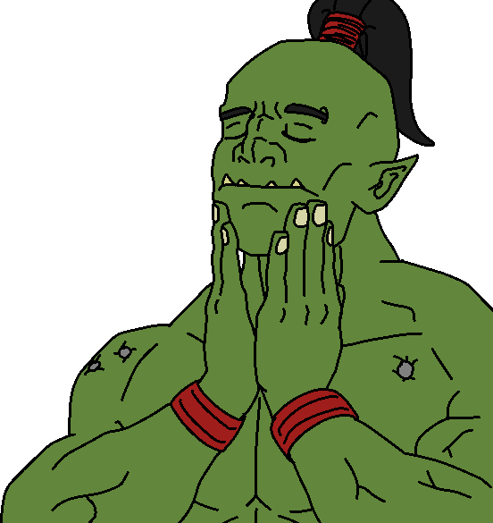

Orcs
 The Orks, also called greenskins, are a savage, warlike, green-skinned species of humanoids who are spread all across the Milky Way Galaxy. They share many features with Warhammer Fantasy Orcs (and were initially called "Space Orcs" to distinguish them).
The Orks, also called greenskins, are a savage, warlike, green-skinned species of humanoids who are spread all across the Milky Way Galaxy. They share many features with Warhammer Fantasy Orcs (and were initially called "Space Orcs" to distinguish them).They are seen by their enemies (pretty much everyone else in the universe) as savage, warlike, and crude, but they are the most successful species in the whole galaxy, outnumbering possibly every other intelligent starfaring species, even Humanity (with the very plausible exception of the Tyranids).
Greenskins are one of the most dangerous alien races to plague the galaxy. Numerous beyond belief and driven always to fight and conquer, the Orks threaten every single intelligent species of the galaxy.
Orks are possibly the most warlike aliens in the 41st Millennium, and their number is beyond counting. Amid constant, seething tides of war and bloodshed, burgeoning Ork stellar empires rise and fall.

Mercifully most are short-lived, soon destroying themselves in a maelstrom of violence and internecine conflict, but should the Orks ever truly unify, they would crush all opposition.
The Orks' unquenchable thirst for battle has always proved their downfall: historically, the Ork tribes have spent much of their time fighting amongst themselves, waging brutal wars with only the strongest surviving. On occasion, an Ork leader will emerge who is mighty enough to defeat his rivals and unite the warring tribes.
His success draws other tribes to him, and soon a great WAAAGH! is underway -- partly a migration, partly a holy war that can exterminate the populations of entire star systems.
When the Orks are on the rampage, the galaxy trembles, and in these dark days of the Time of Ending, there are more WAAAGH!s rising than ever before recorded.